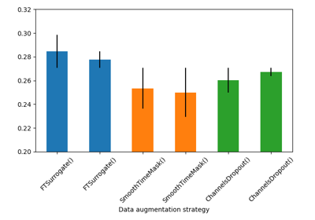

Advanced neural network training strategies#
Examples explaining more advanced topics in neural network training strategies.

Fingers flexion cropped decoding on BCIC IV 4 ECoG Dataset
Fingers flexion cropped decoding on BCIC IV 4 ECoG Dataset


Searching the best data augmentation on BCIC IV 2a Dataset
Searching the best data augmentation on BCIC IV 2a Dataset


Cross-session motor imagery with deep learning EEGNet v4 model
Cross-session motor imagery with deep learning EEGNet v4 model

Self-supervised learning on EEG with relative positioning
Self-supervised learning on EEG with relative positioning